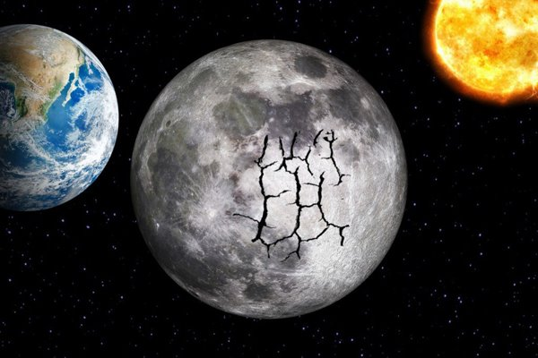

달의 지진

아폴로 우주인들이 달에 발을 내디딜 때 가지고 간 물건 중 하나가 지진계였다. 달 표면에 지진계를 설치했을 때 그들은 계기판에 진동이 기록되는 걸 지켜볼 수 있었는데, 이는 곧 지진(월진)이었다. 달은 우리가 예상했던 것과는 달리 죽은 천체가 아니었던 것이다. 미약한 월진은 지표 아래 몇 킬로미터 지점에서 발생하고 있었는데, 그 원인은 지구의 인력 때문으로 생각되며, 지표가 그 영향으로 미세하게나마 갈라지고 가스가 분출되는 경우도 있었다고 한다.